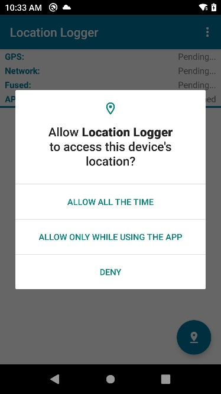

By Darryn Campbell, Software Architect
This document details the developer impact of moving to Zebra devices running Android 11 (API level 30) and is a follow-up to my previous posts about what’s new for enterprise developers in Android 10, Pie, Oreo, Nougat and Marshmallow. If you are moving from an earlier version of Android directly to 11, I recommend that you read the documents in sequence since all the earlier information is pertinent to subsequent releases.
Please also refer to the Android Version Migration page on Zebra TechDocs.
Overview
Google emphasises a continued focus on user privacy in Android 11 which does not always translate to an enterprise environment with shared devices and “corporate owned” task-specific devices. The purpose of this document is to highlight those Android 11 changes of relevance to Zebra enterprise devices.
Google has published highlights of the Android 11 changes on its developer portal and has broken down the changes as follows:
Google also has published information about changes to Android enterprise features in 11, but those are applicable only to EMM developers.
This document does not replace recommendations from Google; it is designed to supplement those recommendations for enterprise use cases.
Audience for This Document
Many Zebra devices will either receive or be shipped with an upgrade to Android 11. Please refer to your device’s specification sheet and consult your local Zebra representative for more authoritative information. Any developers targeting deployments featuring at least one Android 11 device or devices that will be updated to 11 should be aware of the changes detailed here.
This document covers the Android platform changes introduced in A11 and their impact on Zebra developers. It does not attempt to cover new device features introduced by Zebra unless there is overlap.
Privacy Updates
Scoped Storage Updates
Scoped Storage was first introduced in Android 10 and by default, restricted the access to mass storage that was available to an application. An application configured for scoped storage is only able to access a sandboxed environment in external storage (what used to be the SD card) meaning it cannot share files with other apps unless under specific scenarios such as sharing media or using the storage access framework, which requires the end-user to manually select the desired file.
For more information on Scoped Storage please refer to the Android documentation or the previous article, “What’s new in Android 10 for Zebra developers”.
The recommendation in Android 10 was for enterprise applications to opt-out of scoped storage using the requestLegacyExternalStorage flag, as doing so would require only a minor change and external storage would work as it did on Pie and earlier.
Android 11 removes support for the requestLegacyExternalStorage flag for applications that target Android 11 (API level 30). For apps that target Android 10 (API level 29), regardless of which version of Android they are running on, the recommendation is to continue using the requestLegacyExternalStorage flag.
For apps targeting Android 11 (API level 30) the requestLegacyExternalStorage flag is ignored by Android therefore the recommendation is to either:
- Make use of Zebra’s new Secure Storage Manager (SSM).
- Re-architect your application in line with Google’s recommendations for best practices which might include use of the MANAGE_EXTERNAL_STORAGE permission.
There is also the concept of “data migration”, which covers the use case where an application exists on a device and is not using the scoped storage model. When that application updates its target SDK to 30, it can set the preserveLegacyExternalStorage flag to continue using the ‘legacy’ storage model and have access to the files it previously created. This is not a work-around to avoid scoped storage however, as the preserveLegacyExternalStorage flag has no effect if the application was not previously installed on a device.
Another change to the Android storage model is the introduction of ‘All files access’, which allows an application access to all files in external storage and is not subject to scoped storage. The caveat is that all such applications need to adhere to these additional Play Store policies - unless they meet this specific criteria, they cannot be published in the Play Store.
More details on how Scoped Storage was updated on Android 11 can be found in the Android documentation.
Permissions
There have been several changes to how runtime permissions work in Android 11:
- One-time permissions allow the user to grant permission to an application a single time. The user is prompted again to grant the permission the next time the app is launched.
- Permissions auto-reset causes permission granted previously to be revoked by Android if an app is not launched for "a few months." The user is prompted to grant these permissions again when the app is relaunched.
- A user denying a permission more than once is interpreted as “don’t ask again.” In Android 10, “deny” and “don’t ask again” were separate options. In Android 11, these have been combined.
Permissions auto-reset affects only applications whose target SDK is 30 (Android 11). The other permissions changes affect any app running on Android 11.
| Launching the camera app on Android 10, note the separate “Deny” and “Deny & don’t ask again” options. | Launching the camera app on Android 11, note the one-time permission of “Only this time.” |
The Android documentation for one-time permissions, auto-reset permissions and permission dialog visibility goes into a lot more detail on these features but the majority of enterprise developers will be unaffected by these changes. Applications deployed in an enterprise environment will typically either be deployed by an Enterprise Mobility Management system (EMM) or deployed using Zebra’s StageNow utility.
EMMs offer an option to automatically grant runtime permissions and it is always best practice to enable this option to ensure the end-user cannot break the workflow of your app by denying runtime permissions. Zebra’s StageNow utility automatically grants runtime permissions when an app is installed using the App Manager feature.
Applications whose permissions have been automatically granted by either an EMM or StageNow will not be subject to one-time permissions or auto-reset permissions and apps will continue to work on Android 11 without issue.
Even if users have access to the Settings panel, they will not be able to enable auto-reset permissions:
| Application whose permissions have been automatically granted. | Application whose permissions have not been automatically granted. Note the additional ‘Remove permissions…’ option. |
Another best practice is to prevent your end users from accessing device settings to ensure they do not revoke permissions. The settings screen can be blocked in numerous ways. For example, your EMM will have an option for this or you can use the Access Manager or Zebra’s Enterprise Home Screen utility.
Location
Getting a device’s location is a very common use case in the enterprise and Android 11 has made some slight changes to how an application can request location permission. Remember that since Android changes are cumulative, your app will still be subject to the “Background Location Limits” introduced in Android Oreo, as well as the need to separately request access to background location introduced in Android 10.
The two location changes for Android 11:
- Location is a runtime permission and is therefore subject to the one-time permission changes discussed earlier, whereby a user is given the option to grant the permission “only this time.”
- Applications requiring location in the background must request this permission separately from the foreground permission.
To understand the changes between Android Oreo, 10 and 11 it is probably best shown graphically:
- Android 10:
|  | ||
| Target SDK = 26 Requested: ACCESS_FINE_LOCATION only |
Target SDK = 29 Requested: ACCESS_FINE_LOCATION only |
Target SDK = 29 Requested: ACCESS_FINE_LOCATION and ACCESS_BACKGROUND_LOCATION |
- Android 11:
| Target SDK = 29 Requested: ACCESS_FINE_LOCATION only |
Target SDK = 29 Requested: ACCESS_FINE_LOCATION and ACCESS_BACKGROUND_LOCATION |
| All permissions are automatically denied without prompting the user | |
| Target SDK = 30 Requested: ACCESS_FINE_LOCATION only |
Target SDK = 30 Requested: ACCESS_FINE_LOCATION and ACCESS_BACKGROUND_LOCATION |
Some notes on the above:
- The behaviour of your application running on Android 11 will change regardless of whether you modify your target SDK level.
- Requesting both location and background location in the same request on Android 11 is not allowed, regardless of your target SDK.
Google has introduced a process for manually approving applications in the Google Play store which accesses your location in the background. The reasoning for this was discussed in this blog. If you do not comply with Google’s approval process, which involves providing a short video demonstration of how a user is presented the location runtime permission, then your app is subject to removal from Google Play Store. To follow this process, even an app designed to always run with permissions automatically granted must allow for the condition of permissions manually approved by the user.
Notes:
- Manual approval of apps on the Google Play store which accesses your location in the background does not apply to private apps.
- If you are distributing your application outside of Google Play and are automatically granting the location runtime permission (e.g. through StageNow), then your application will not be subject to the changes in location permission between Android 10 and 11.
It is always best practice to follow Google’s guidelines for requesting location access at runtime where the app may find itself running on a device not configured to automatically grant runtime permissions, this is especially important for background location access from Android 11 onwards.
Package Visibility
Applications that target API level 30 (Android 11) are subject to new package visibility changes. These changes are documented on the Android developer portal. In summary, an application’s ability to query which other applications are installed on the same device is being restricted.
The Android documentation references several use cases such as checking if a browser is available on the device or preventing the disambiguation dialog from being shown. Zebra devices in particular have an important consideration as any API exposed through a Content Provider, such as Zebra’s OEMInfo (used to obtain the device serial number, IMEI and BT MAC address) are subject to this restriction.
For OEMInfo, applications wishing to take advantage of the content providers it exposes must specify the following in their application manifest:
<queries>
<package android:name="com.zebra.zebracontentprovider" />
</queries>
Any application using Zebra's EMDK development tools for Android or Xamarin must make a similar change to their application manifest:
<queries>
<package android:name="com.symbol.emdk.emdkservice" />
</queries>
Along the same lines, any application using the new Secure Storage Manager must declare access as follows:
<queries>
<provider android:authorities="com.zebra.securestoragemanager.securecontentprovider" />
</queries>
Other Behavioural Changes
Wake Locks
Battery swap is a feature of many Zebra mobile devices enabling you to replace the battery without fully shutting down the device. Customer applications which hold a wake lock will prevent battery swap from working, therefore wake locks should be cleared when not needed. Android 10 and earlier automatically cleared any wake locks before battery swap proceeded but this behaviour has changed in Android 11.
Permissions
Android 11 has introduced changes to how the System Alert Window permission is handled as well as when the App Usage Stats are available regardless of the target API level of the app. Both of these permissions (SYSTEM_ALERT_WINDOW and PACKAGE_USAGE_STATS respectively) can be automatically granted via the MX AccessManager’s Permission Access Action feature and specifying the appropriate feature name.
These are not standard runtime permissions and must therefore be granted access via MX or via your EMM through OEMConfig where supported.
If the System Alert Window permission has been granted in this manner, you will see no behaviour change when moving to Android 11. But applications making use of App Usage Stats must still follow Google’s guidance when used in a multi-user or keyguard (lock screen) scenario.
Maps v1 Shared Library
Applications still using the Maps v1 shared library should have already transitioned to the Maps SDK for Android. This transition is mandated in Android 11 as the old library has been removed.
Foreground Service Changes
Android 11 introduces two new foreground service types ‘camera’ and ‘microphone’ to add to the ‘location’ service type introduced in Android 10. Foreground services accessing any of these features must be assigned the appropriate type(s) in order to work. This allows Android to correctly manage what these services are allowed to do. For example, foreground services launched from a background app are not allowed to access the microphone.
MAC Address Updates
Android Marshmallow prevented users from accessing the Wi-Fi MAC address of the device programmatically through WifiInfo.getMacAddress(), and it just returned the fixed string “02:00:00:00:00:00”. This led to developers trying to find workarounds to circumvent the restriction with different APIs. This StackOverflow post is a good example.
Android 11 introduces restrictions on additional APIs, preventing these workarounds from working. More information on exactly which APIs are changed in more detail is given in the Android documentation but the previous advice that Wi-Fi MAC address should not be used as a hardware identifier remains true.
Non-SDK Interface Restrictions
Restrictions on non-SDK interfaces (i.e. non-public APIs) have been around since Android Pie. Google’s goal is to cut down on an application’s ability to call non-SDK methods via reflection or the JNI while providing a path forward for those apps such as by making additional APIs public.
Google offers dedicated documentation for this. Also see my article on how non-SDK interface restrictions affect Zebra developers. The nomenclature has changed a couple of times since the introduction of this feature in Pie; in Android 11 there are still 4 categories but the naming convention has moved away from assigning colour to the lists, they are now ‘blocklist (disallowed)’, ‘conditionally blocked’, ‘unsupported’ and ‘sdk (allowed)’. For more detail on the list changes specifically for Android 11, I recommend Google’s documentation on the deltas.
Changes to the Play Store Requirements
In 2018, Google began requiring that applications posted to the Google Play store target a recent Android API level. The target SDK level has been updated annually and it is expected that this trend will continue, with announcements made every February. The latest requirements are detailed on the Android developer support page, but in summary:
- August 2, 2021: New applications added to Google Play must target API level 30 (Android 11) or higher.
- November 1, 2021: Updates to existing applications must target API level 30 (Android 11) or higher.
These rules affect only the target SDK; you can still assign any minimum SDK level. Google provides additional documentation for developers whose applications will run on devices with earlier versions of Android than the target SDK.
From August 2021, all new apps will be required to publish with the Android app bundle format. More information is available at this Google blog on the topic but please be aware that this restriction does not apply to private enterprise apps, which can still be distributed as APKs.
This change to app bundles should only affect a minority of enterprise developers, specifically those distributing to the public play store. But if you do fall into this category, please be aware that any MX feature you use that requires an application signature must be provided with the app signing certificate for the Google app signing key, not your upload key. See Deploying Your Apps with Android Application Bundles for more information.
 App signing for Google Play store
App signing for Google Play store
New Features in Android 11
Some of the most notable feature updates to Android 11 from the consumer perspective are the introduction of IOT device control from the power menu and improvements to how conversations are handled with chat bubble support for messaging applications. Neither of these features really fits into the enterprise.
Zebra’s IOT offering from an enterprise perspective is known as Savanna. Anyone who has IOT use cases should explore what Savanna has to offer.
We do not see many third-party conversation-style applications written for Zebra enterprise devices. Instead, messaging apps tend to focus on groups and Push-to-Talk functionality. Zebra’s Workforce Connect application is used extensively for this purpose.
Captive Portal API Support
Although captive portal support has been present in Android since Lollipop, Android 11 introduces support for DHCP option 114, which offers far more accurate detection and other new features. For more information, see the Android documentation on captive portal changes.
 Screen recording
Screen recording
Screen recording and optional audio recording is built into Android 11 by default and can be enabled and controlled from the Quick Settings pull-down. Prior to Android 11, screen recording required a third-party application that had to be granted permission to record the screen, something potentially undesirable depending on the sensitivity of information being displayed on the device.
Screen recording can be used for a variety of diagnostic purposes in the enterprise, particularly in offline scenarios where remote display is not available. If your users experience trouble with their device or an application on the device, they can use screen capture to make a short video demonstrating the issue.
Since it is common for the administrator to restrict access to the Quick Settings menu (which also contains Wi-Fi settings, Bluetooth settings, do not disturb etc.), one downside is that this feature may not be available to your end-users since it can be accessed only via this menu.
Wireless Debugging
Android 11 supports deployment and debugging of applications wirelessly via adb and this works with Zebra devices. Although wireless debugging was possible on earlier versions of Android, it is now possible to configure the feature without first connecting the device via a cable.
For full setup instructions, follow the Google guide for wireless debugging. The process essentially involves enabling the option on your device, pairing using a pairing code and executing the equivalent adb command from the host machine. The process is quick once you get used to it.
Many Zebra devices require accessories such as cradles or cups to connect via USB. Wireless debugging can be used as an alternative for developers who only have access to the “charging only” variants of these accessories.
Data Access Auditing
Data access auditing is a new feature available on all devices running Android 11 that ensures your app or its dependant SDKs are not unexpectedly accessing private user data. Although accessing private user data is uncommon on devices that are typically shared, applications that find themselves needing access data such as the contact list can make use of access auditing to validate there is no unexpected access.
More information and examples are available from Android’s documentation on the subject.
Android in the Enterprise
Google publishes dedicated documentation for “What’s new for enterprise in Android 11” but that title can be slightly misleading for Zebra developers as most of the features Google has added affect the work profile and company-owned, personally enabled devices.
There are a couple of new APIs worth highlighting that are available to the Device Owner but bear in mind these will need to be exposed by your EMM (or Device Owner) to be available in your deployment:
- The ability to check or set the Factory Rest Protection (FRP) policy. This has been a common request among Zebra customers, particularly the ability to clear FRP which is possible by creating a policy with FRP disabled. For more information, please see my 2018 post on Factory Reset Protection.
- The ability to check or set the “protected packages” on a fully managed device. A “protected package” is defined as a package where the user is not able to clear the app data or force-stop it. Zebra’s MX AccessManager can clear the application cache and user data but it is not recommended to clear the app data of a “protected package.”
Common Criteria
Zebra devices support Common Criteria. For the latest information related to Common Criteria and Android 11 please refer to the Common Criteria download packages.
API Changes
Toast API
There have been several changes to the Toast mechanism in Android 11:
Standard, simple toasts are unchanged. If your application is using a simple toast from either the foreground or background, there are no changes in Android 11. Simple toast
Custom toast views are deprecated. These were any Toasts that called setView().
Custom toast
This has two implications for Android 11:
- Applications attempting to launch a custom toast from the background will not succeed and will generate the following error message in logcat: “W/NotificationService: Blocking custom toast from package
due to package not in the foreground.” - The setView() and getView() methods are deprecated and developers are instead encouraged to use a SnackBar to display short messages when in the foreground.
- Applications attempting to launch a custom toast from the background will not succeed and will generate the following error message in logcat: “W/NotificationService: Blocking custom toast from package
Several of the Toast APIs will no longer return the correct values when the app targets Android 11 including setHorizontalMargin() and setGravity(). See the Toast API changes documentation from Google for the complete list.
Test App Compatibility
As with any new version of Android, it is incumbent on the developer to update and test their application to ensure it works well with the new version. Android has summarized the process for app migration for Android 11 which remains consistent with what developers have done for every other Android release (namely testing their app against the newly introduced behavioural and functional changes).
Android 11 has taken this compatibility testing a step further by introducing a new compatibility framework that enables a developer to selectively turn features on and off to isolate changes and update their app to accommodate these features one step at a time. These are exposed through the Android developer options, so is not designed to ‘opt out’ of behavioural changes. The test framework is explained in full detail in the Android documentation.
App compatibility changes
Although a good step in the right direction, you can test compatibility changes only between Android 10 and Android 11 for now. The ‘location’ foreground service type was introduced in Android 10, but Android 11 introduced the camera/microphone types which are represented by CAMERA_MICROPHONE_CAPABILITY_CHANGE_ID in the second image above; that option is grayed-out because my test app did not have that type of service.
Conclusion
The biggest changes in Android 11 relate to how permission requests are presented to end users and the mandatory adoption of scoped storage for applications targeting API level 30. The changes to permission requests will only affect a minority of enterprise deployments and the changes to scoped storage were discussed earlier in this post.